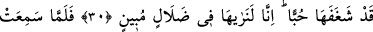

MISIRLI KADINLAR VE ZÜLEYHÂ
30. Şehirdeki bazı kadınlar: “Azizin karısı, uşağının nefsinden murâd almak
istiyormuş! Sevdâ onun kalbine işlemiş! Biz onu gerçekten açık bir sapıklık içinde
görüyoruz!’ dediler.
31. (Kadın) onların dedikodusunu işitince onlara dâvetçi gönderdi. Onlar için
dayanacak yastıklar hazırladı. Onlardan her birine de bir bıçak verdi. Yûsuf’a da:
“Çık karşılarına!” dedi. Kadınlar onu görünce, büyüklüğünü anladılar.
(Şaşkınlıklarından) ellerini kestiler ve: “Hâşâ Rabbimiz! Bu bir beşer değil… Bu
ancak üstün bir melektir!’ dediler.
32. Kadın dedi ki: “İşte hakkında sizin beni kınadığınız kişi budur. Ben onun
nefsinden murâd almak istedim. Fakat o, (bundan) şiddetle sakındı. Andolsun, eğer
o kendisine emrettiğimi yapmazsa mutlaka zindana atılacak ve elbette
sürünenlerden olacaktır.”
“Şehirdeki bazı kadınlar” yani kadınlardan bu topluluk şunlardır: Vezirin fırıncısının,
şarap sunucusunun, hayvanlarıyla ilgilenen seyisinin, zindanlarına bakan kişinin ve
hâcibinin karılarından oluşan beş kadındır.
Rivâyet edilir ki Aziz gerçi bu hikayeyi örtbas etti, ama aşk sözü nasıl gizli kalır?
Bütün bu olanların kokusu avamın diline düştü.
Züleyhâ’nın sırrı gül gibi açılıp yayıldı
Dünya onu ayıplamakta bülbül kesildi
Mısır’ın bazı kadınları türlü türlü sözlerle Züleyhâ’yı ayıplayıp ona dil uzattılar. Aşk
olan yerde yerilme kavgası eksik olmaz. Aşkta bu sıkıntılardan selâmet sevdâsı da
olmaz.